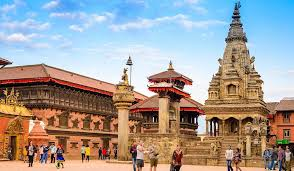

Bhaktapur Durbar Square is a UNESCO World Heritage Site, acting as an "open museum" of medieval Newar art, architecture, and culture in Nepal. Located 12 km east of Kathmandu, it was the palace complex of the Malla kings, featuring intricately carved wooden temples, red-brick palaces, and expansive courtyards from the 13th to 18th centuriesThe earthquake that occurred in 1934 was responsible for the destruction of nearly one-third of the older architectural monuments, including monasteries, temples, and other buildings. Despite this, there are still many treasures left. A significant earthquake struck the area in 1934, causing approximately 2,000 homes to be completely leveled and another 2,000 to sustain significant damage. Roughly one thousand people suffered as a result of this earthquake. Over the course of time, a great number of buildings have been brought back to their former glory, thanks in large part to efforts funded by West Germany and the United States, respectively, in the late 1980s and early 1990s. The square was shaken severely once more by a powerful earthquake on April 25, 2015. In Bhaktapur Square, the famous Vatsala Devi temple, which was made entirely of sandstone and had golden pagodas on top, was also destroyed..
-55-Window Palace (Pachpane Jhyale Durbar): The main attraction, built in the 15th century by King Yaksha Malla and remodeled in the 17th century, featuring a unique facade with 55 intricately carved wooden windows.
-Golden Gate (Lun Dhwākhā): Built in 1754 by Ranjit Malla, this acts as the entrance to the main palace courtyard, renowned for its exquisite metalwork and gilded beauty.
-Nyatapola Temple: The tallest pagoda-style temple in Nepal, featuring five stories and located in Taumadhi Square, symbolizing the great strength of the goddess Siddhi Lakshmi.
-Chyasilin Mandap: A small, octagonal pavilion located near the palace, meticulously restored after the 1934 earthquake to represent the city’s architectural dedication.Vatsala Temple and
-Taleju Bell: A stone temple known for its detailed carvings, famously associated with the "Barking Bell" formerly used to signal emergencies.
-Statue of Bhupatindra Malla: A prominent bronze statue of the king kneeling in devotion towards the Taleju temple, located in front of the Golden Gate.